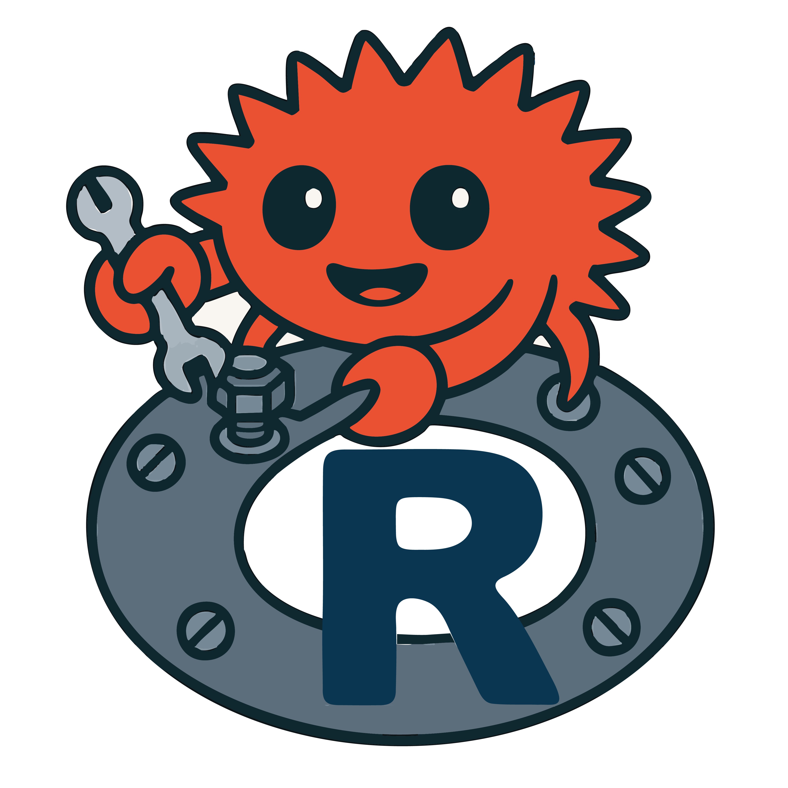

rustytools is still under active development. Please check back for updates. For now, we have implemented a few function.
Installation
First you need to have an updated Rust installation. Go to this site to learn how to install Rust.
To install rustytools:
remotes::install_github("furlan-lab/rustytools")How to start
See the vignettes that provide an overview of each function function…
vignette("getConsensus")vignette("seqAlign")